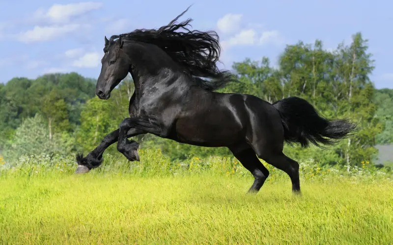

ჩემი საყვარელი ცხოველია ცხენი
ცხენი არის ოთხფეხა ჩლიქოსანი ძუძუმწოვარი ცხოველი.
ცხენები დიდი ხნის განმავლობაში ეკონომიკურად ყველაზე მნიშვნელოვანი მოშინაურებული ცხოველები იყვნენ და განსაკუთრებულ როლს ასრულებდნენ ადამიანთა და ტვირთის ტრანსპორტირებაში ათასობით წლის განმავლობაში.
საშუალოდ 40–48 კმ/სთ, მაქსიმუმ შეიძლება მიაღწიოს 60–70 კმ/სთ
